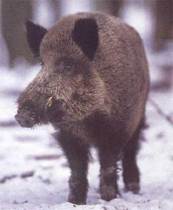
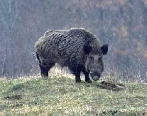

CINGHIALE (BOAR)

| Climate/Terrain | Foreste temperate e montane |
| Frequency | Uncommon |
| Organization | Solitary or Pack |
| Activity Cycle | Any |
| Diet | Onnivoro |
| Intelligence | Animal (1) |
| Treasure | Nessuno |
| Alignment | Neutral |
| No. Appearing | (1d10) 1-7 1; 8-10 1d3+1 |
| Armor Class | 6 |
| Movement | 15 |
| Hit Dice | 3+3 |
| Thac0 | 17 |
| No. of Attacks | 1 colpo di zazze (danno da punta) |
| Damage / Attacks | 3d3 |
| Special Attacks | Nessuna |
| Special Defenses | Iron Will |
| Magic Resistance | Nessuna |
| Size | Medium |
| Morale | Average (10) |
| XP value | 150 |
Descrizione
Il cinghiale (sus scrofa) è il progenitore del maiale domestico. Le sottospecie più grandi possono raggiungere anche i 350 kg di peso. La pelliccia è scura e setolosa, il grugno conico e le zampe corte.
Combat
La sua pelle è molto spessa e poco vascolarizzata, il che lo protegge da ferite e infezioni negli spostamenti nella macchia mediterranea oltre che dai morsi di alcuni animali, come le vipere. Hanno uno spesso strato di grasso a protezione dei fianchi che utilizzano sia come riserva di energia sia come difesa dagli attacchi degli avversari, che tenderanno a colpire con staffilate laterali della testa, pericolose per la presenza dei canini molto affilati e sporgenti dal muso.
Habitat/Society
È un maiale selvatico dal temperamento aggressivo, le zanne lo aiutano oltre che nello scavo anche nei combattimenti. La sua dieta è onnivora e molto adattabile, si ciba di radici, ghiande, e altri vegetali, ma anche di insetti e piccoli animali. La femmina scava una tana nel terreno e la mimetizza con arbusti e vegetali. Dopo 1-2 anni i maschi si allontanano dalle madri e raggiungono l'età adulta. La struttura sociale è sostanzialmente formata da branchi femminili con i piccoli nati nell'anno più i nati dell'anno precedente. I maschi intorno ai due anni si allontanano dal branco femminile per condurre una vita solitaria o in piccoli gruppi, fino al momento degli amori. Per la sua furia in combattimento il cinghiale continuerà a combattere anche se portato ad un valore di punti ferita negativo. A tal fine il cinghiale si considererà possedere la competenza Iron Will con un valore di prova base pari a 15.
Ecology
Il cinghiale è molto ricercato per la sua carne ricca di proteine e di grasso. La caccia al cinghiale, inoltre, essendo un'attività pericolosa è utilizzata per addestrare giovani guerrieri e cacciatori e per dimostrare il loro coraggio e la loro esperienza in battaglia. Una carcassa di cinghiale ripulita ha un valore di mercato pari a 6-10 monete d'oro.
